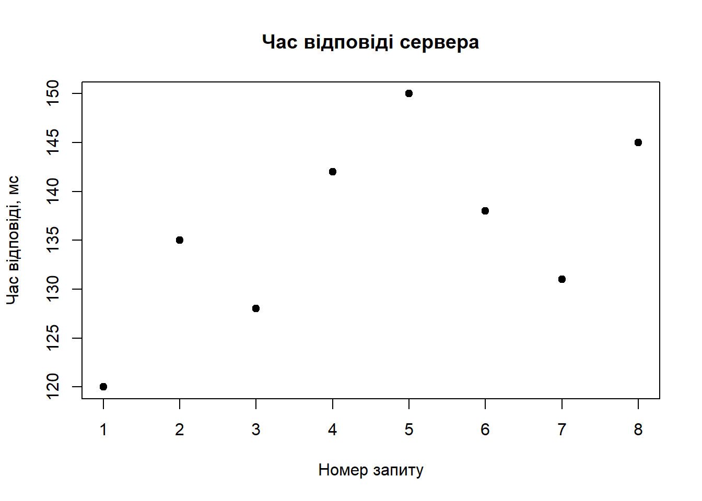
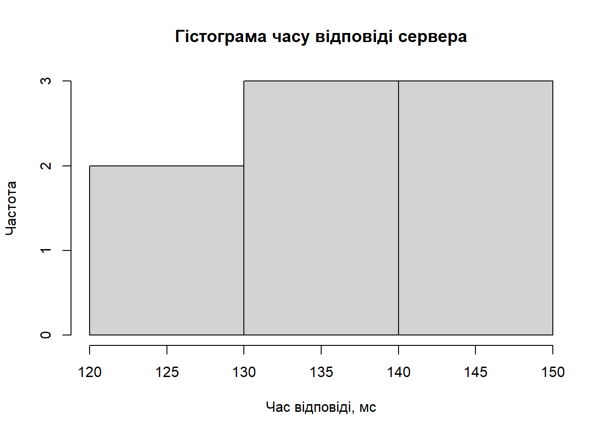
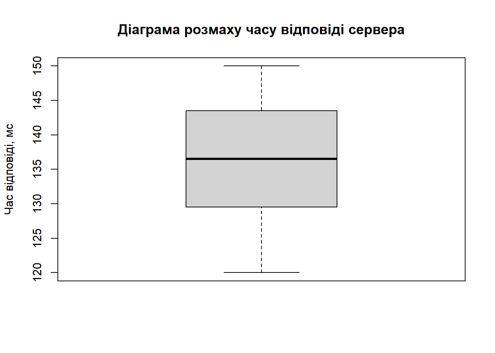
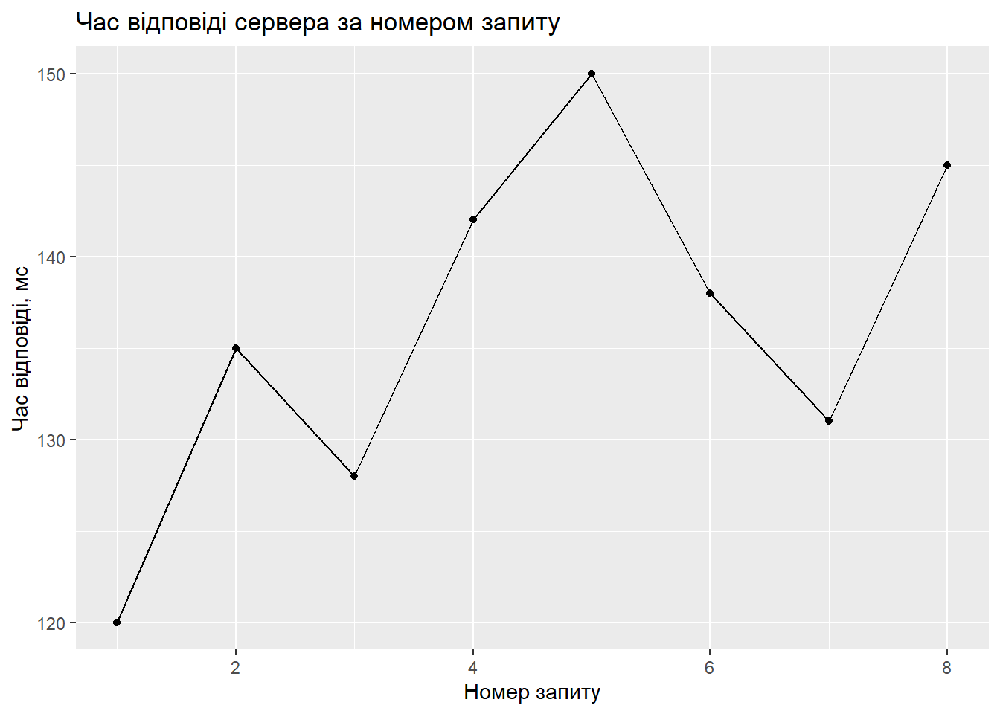
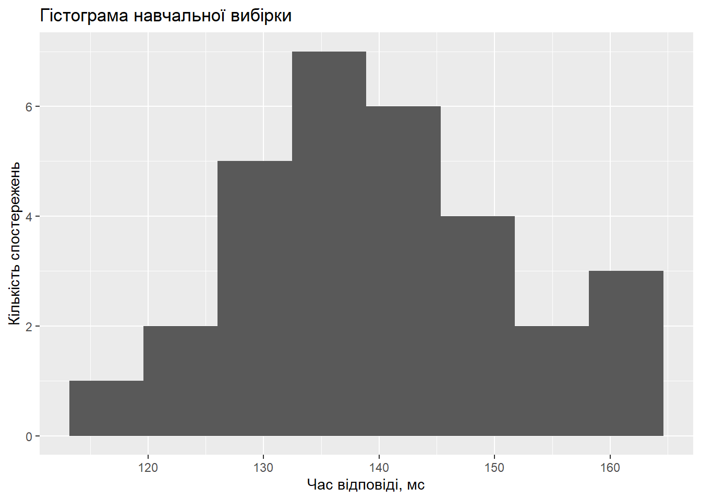
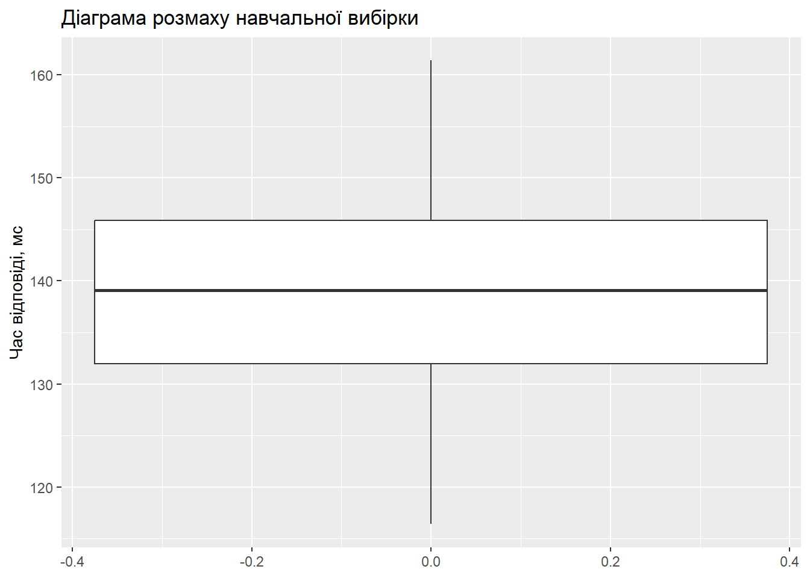
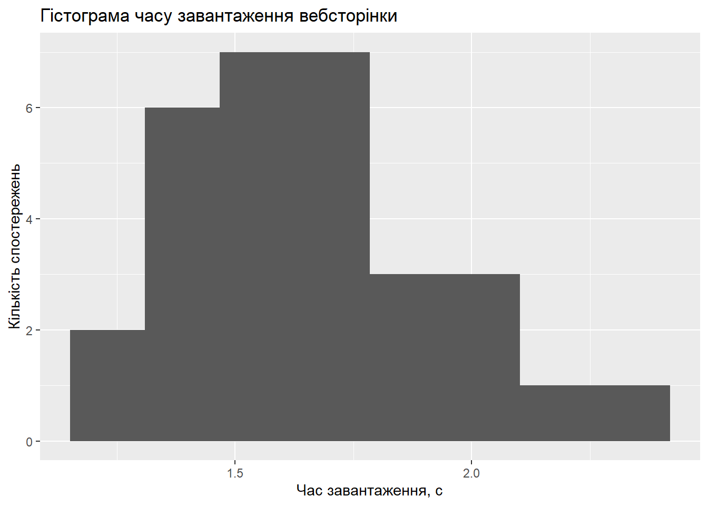
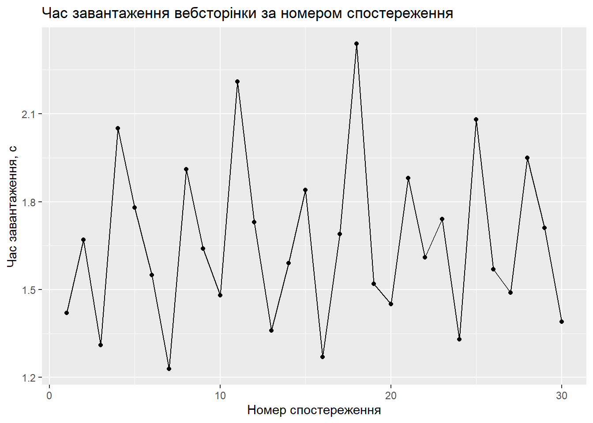
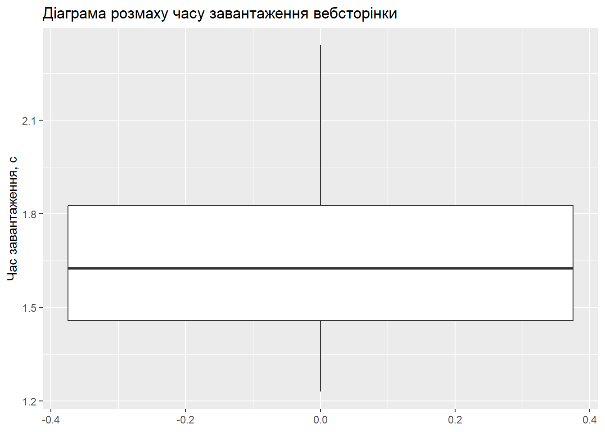

x <- 10
class(x)[1] "numeric"Спеціалізована мова програмування R для статистичної обробки даних. Швидкий старт
Мета роботи: Сформувати початкові практичні навички роботи з мовою програмування R як спеціалізованим інструментом статистичної обробки інформації, навчитися виконувати базові обчислення, створювати вектори й таблиці даних, обчислювати описові статистики та будувати найпростіші графіки.
R – це спеціалізована мова програмування та програмне середовище, орієнтоване на статистичні обчислення, аналіз даних, моделювання та візуалізацію результатів.
У статистичному дослідженні R можна використовувати для таких основних етапів:
Основним принципом роботи в R є створення та обробка об’єктів. Об’єктом може бути число, вектор, таблиця даних, модель, графік або результат статистичного тесту.
Для присвоювання значення об’єкту використовується оператор <-.
x <- 10
class(x)[1] "numeric"У результаті створюється числовий об’єкт x.
y <- 15
x + y[1] 25Отримуємо суму двох числових об’єктів.
Вектор є однією з базових структур даних у R. Для створення вектора використовується функція c().
response_time <- c(120, 135, 128, 142, 150, 138, 131, 145)
response_time[1] 120 135 128 142 150 138 131 145У статистичних задачах вектор можна розглядати як вибірку значень певної випадкової величини.
Для роботи з декількома змінними зручно використовувати структуру data.frame.
server_data <- data.frame(
request_id = 1:8,
response_time = c(120, 135, 128, 142, 150, 138, 131, 145),
load_level = c(
"low", "low", "low",
"medium", "medium", "medium",
"high", "high"
)
)
server_data request_id response_time load_level
1 1 120 low
2 2 135 low
3 3 128 low
4 4 142 medium
5 5 150 medium
6 6 138 medium
7 7 131 high
8 8 145 highКожен рядок таблиці відповідає окремому спостереженню, а кожен стовпець – окремій змінній.
str(server_data)'data.frame': 8 obs. of 3 variables:
$ request_id : int 1 2 3 4 5 6 7 8
$ response_time: num 120 135 128 142 150 138 131 145
$ load_level : chr "low" "low" "low" "medium" ...Для первинного статистичного аналізу використовуються описові характеристики вибірки.
До основних описових статистик належать:
mean(response_time)[1] 136.125median(response_time)[1] 136.5min(response_time)[1] 120max(response_time)[1] 150var(response_time)[1] 94.69643sd(response_time)[1] 9.731209summary(response_time) Min. 1st Qu. Median Mean 3rd Qu. Max.
120.0 130.2 136.5 136.1 142.8 150.0 Функція summary() дозволяє швидко отримати мінімальне значення, перший квартиль, медіану, середнє, третій квартиль та максимальне значення.
Графічний аналіз дозволяє наочно оцінити характер розподілу та зміну даних.
plot(
server_data$request_id,
server_data$response_time,
main = "Час відповіді сервера",
xlab = "Номер запиту",
ylab = "Час відповіді, мс",
pch = 19
)
hist(
response_time,
main = "Гістограма часу відповіді сервера",
xlab = "Час відповіді, мс",
ylab = "Частота"
)
Гістограма показує, як спостереження розподіляються за інтервалами значень.
boxplot(
response_time,
main = "Діаграма розмаху часу відповіді сервера",
ylab = "Час відповіді, мс"
)
Діаграма розмаху дозволяє оцінити медіану, квартилі, міжквартильний розмах та можливі аномальні значення.
Можливості базового R можна розширювати за допомогою пакетів.
У цій лабораторній роботі використаємо пакети dplyr для обробки таблиць та ggplot2 для побудови графіків.
packages <- c("dplyr", "ggplot2")
installed <- rownames(installed.packages())
needed <- setdiff(packages, installed)
if (length(needed) > 0) {
install.packages(needed)
}
library(dplyr)
library(ggplot2)ggplot(server_data, aes(x = request_id, y = response_time)) +
geom_point() +
geom_line() +
labs(
title = "Час відповіді сервера за номером запиту",
x = "Номер запиту",
y = "Час відповіді, мс"
)
Розглянемо навчальну вибірку, що описує час відповіді сервера на запити користувачів.
set.seed(123)
response_data <- data.frame(
request_id = 1:30,
response_time = round(
rnorm(30, mean = 140, sd = 12),
1
)
)
head(response_data) request_id response_time
1 1 133.3
2 2 137.2
3 3 158.7
4 4 140.8
5 5 141.6
6 6 160.6Перші шість спостережень можна переглянути за допомогою функції head().
tail(response_data) request_id response_time
25 25 132.5
26 26 119.8
27 27 150.1
28 28 141.8
29 29 126.3
30 30 155.0Функція tail() показує останні спостереження таблиці.
str(response_data)'data.frame': 30 obs. of 2 variables:
$ request_id : int 1 2 3 4 5 6 7 8 9 10 ...
$ response_time: num 133 137 159 141 142 ...class(response_data)[1] "data.frame"Отриманий об’єкт має клас data.frame, тобто є таблицею даних.
summary(response_data) request_id response_time
Min. : 1.00 Min. :116.4
1st Qu.: 8.25 1st Qu.:132.0
Median :15.50 Median :139.1
Mean :15.50 Mean :139.4
3rd Qu.:22.75 3rd Qu.:145.9
Max. :30.00 Max. :161.4 За допомогою summary() можна отримати узагальнені статистичні характеристики змінних таблиці.
response_summary <- response_data |>
summarise(
n = n(),
mean_time = mean(response_time),
median_time = median(response_time),
min_time = min(response_time),
max_time = max(response_time),
variance_time = var(response_time),
sd_time = sd(response_time)
)
response_summary n mean_time median_time min_time max_time variance_time sd_time
1 30 139.4333 139.1 116.4 161.4 138.4464 11.76633Отримані характеристики дають змогу оцінити центральне значення вибірки та рівень розсіювання спостережень.
ggplot(response_data, aes(x = response_time)) +
geom_histogram(bins = 8) +
labs(
title = "Гістограма навчальної вибірки",
x = "Час відповіді, мс",
y = "Кількість спостережень"
)
Гістограма дозволяє оцінити розподіл часу відповіді за інтервалами значень.
ggplot(response_data, aes(y = response_time)) +
geom_boxplot() +
labs(
title = "Діаграма розмаху навчальної вибірки",
y = "Час відповіді, мс"
)
Діаграма розмаху дає змогу оцінити медіану, квартилі та можливі значення, які відрізняються від основної частини вибірки.
Відповідно до номера у списку групи 15 та циклічного вибору варіантів:
15 \bmod 12 = 3.
Отже, індивідуальний варіант – №3: час завантаження вебсторінки, с.
Для аналізу сформовано вибірку з 30 спостережень. Значення характеризують час завантаження вебсторінки в секундах.
page_load_time <- c(
1.42, 1.67, 1.31, 2.05, 1.78,
1.55, 1.23, 1.91, 1.64, 1.48,
2.21, 1.73, 1.36, 1.59, 1.84,
1.27, 1.69, 2.34, 1.52, 1.45,
1.88, 1.61, 1.74, 1.33, 2.08,
1.57, 1.49, 1.95, 1.71, 1.39
)
page_data <- data.frame(
observation = 1:length(page_load_time),
load_time = page_load_time
)
page_data observation load_time
1 1 1.42
2 2 1.67
3 3 1.31
4 4 2.05
5 5 1.78
6 6 1.55
7 7 1.23
8 8 1.91
9 9 1.64
10 10 1.48
11 11 2.21
12 12 1.73
13 13 1.36
14 14 1.59
15 15 1.84
16 16 1.27
17 17 1.69
18 18 2.34
19 19 1.52
20 20 1.45
21 21 1.88
22 22 1.61
23 23 1.74
24 24 1.33
25 25 2.08
26 26 1.57
27 27 1.49
28 28 1.95
29 29 1.71
30 30 1.39У таблиці кожен рядок відповідає окремому спостереженню, а стовпець load_time містить час завантаження вебсторінки в секундах.
Обчислимо кількість спостережень, середнє значення, медіану, мінімум, максимум, дисперсію та стандартне відхилення.
page_summary <- page_data |>
summarise(
n = n(),
mean_time = mean(load_time),
median_time = median(load_time),
min_time = min(load_time),
max_time = max(load_time),
variance_time = var(load_time),
sd_time = sd(load_time)
)
page_summary n mean_time median_time min_time max_time variance_time sd_time
1 30 1.659667 1.625 1.23 2.34 0.07903092 0.2811244Для зручнішого представлення результатів використаємо таблицю з округленням до трьох знаків після коми.
page_summary |>
mutate(
mean_time = round(mean_time, 3),
median_time = round(median_time, 3),
min_time = round(min_time, 3),
max_time = round(max_time, 3),
variance_time = round(variance_time, 3),
sd_time = round(sd_time, 3)
) n mean_time median_time min_time max_time variance_time sd_time
1 30 1.66 1.625 1.23 2.34 0.079 0.281Кількість спостережень у вибірці становить 30.
Середнє значення характеризує типовий час завантаження вебсторінки для досліджуваної вибірки. Медіана показує значення, відносно якого половина спостережень має менший або рівний час завантаження, а інша половина – більший або рівний.
Мінімальне та максимальне значення визначають діапазон зміни часу завантаження вебсторінки.
Дисперсія та стандартне відхилення характеризують розсіювання значень навколо середнього. Чим більшим є стандартне відхилення, тим сильніше окремі значення відрізняються від середнього часу завантаження.
Для досліджуваної вибірки значення часу завантаження знаходяться приблизно в діапазоні від 1,23 до 2,34 секунди. Більшість значень зосереджена поблизу середнього рівня, однак у вибірці присутні окремі повільніші завантаження.
ggplot(page_data, aes(x = load_time)) +
geom_histogram(bins = 8) +
labs(
title = "Гістограма часу завантаження вебсторінки",
x = "Час завантаження, с",
y = "Кількість спостережень"
)
Гістограма показує частоту потрапляння спостережень до окремих інтервалів часу. За її допомогою можна оцінити, у якому діапазоні найчастіше знаходиться час завантаження вебсторінки.
ggplot(page_data, aes(x = observation, y = load_time)) +
geom_point() +
geom_line() +
labs(
title = "Час завантаження вебсторінки за номером спостереження",
x = "Номер спостереження",
y = "Час завантаження, с"
)
Точковий графік показує зміну часу завантаження для кожного окремого спостереження. Він дає змогу побачити коливання показника та окремі значення, які помітно відрізняються від сусідніх спостережень.
ggplot(page_data, aes(y = load_time)) +
geom_boxplot() +
labs(
title = "Діаграма розмаху часу завантаження вебсторінки",
y = "Час завантаження, с"
)
Діаграма розмаху дає змогу оцінити медіану, нижній і верхній квартилі та загальне розсіювання часу завантаження.
R – це спеціалізована мова програмування та програмне середовище для статистичних обчислень, аналізу даних і візуалізації. Вона зручна для статистичної обробки завдяки великій кількості вбудованих статистичних функцій та спеціалізованих пакетів.
Об’єктом у R є елемент, який зберігає певні дані або результат операції. Наприклад, об’єктом може бути число, вектор, таблиця даних, статистична модель або результат обчислення.
<-?Оператор <- використовується для присвоювання значення об’єкту.
Наприклад:
number <- 25У цьому випадку значення 25 присвоюється об’єкту number.
Вектор – це впорядкована послідовність значень одного типу. Він є базовою структурою R, оскільки вибірку числових спостережень зручно представляти саме у вигляді вектора.
Наприклад:
values <- c(1.2, 1.5, 1.8, 2.1)data.frame відрізняється від простого вектора?Вектор містить послідовність значень одного типу, тоді як data.frame складається з рядків і стовпців та може містити декілька змінних. Стовпці таблиці можуть мати різні типи даних.
Основними характеристиками центра вибірки є середнє арифметичне та медіана.
Середнє визначається як сума всіх значень, поділена на їх кількість. Медіана є центральним значенням упорядкованої вибірки.
Для характеристики розсіювання використовуються дисперсія та стандартне відхилення. Також для оцінювання розсіювання можна використовувати розмах та міжквартильний розмах.
Гістограма використовується для графічного представлення розподілу числових даних. Вона показує кількість спостережень, що потрапляють до визначених інтервалів значень.
Діаграма розмаху показує медіану, квартилі та міжквартильний розмах вибірки. Також вона може використовуватися для виявлення значень, які істотно відрізняються від основної частини даних.
Quarto дозволяє поєднувати текст, програмний код і результати його виконання в одному документі. Завдяки цьому статистичний звіт можна автоматично формувати з актуальними таблицями, графіками та результатами обчислень.
У ході лабораторної роботи було розглянуто базові можливості мови програмування R для статистичної обробки інформації.
Було отримано практичні навички створення числових об’єктів і векторів, роботи з таблицями data.frame, використання статистичних функцій mean(), median(), min(), max(), var() та sd().
Для індивідуального завдання було сформовано вибірку з 30 значень часу завантаження вебсторінки. Для цієї вибірки обчислено основні описові статистики та побудовано гістограму, точковий графік і діаграму розмаху.
Отримані результати показали, що більшість значень часу завантаження зосереджена в певному діапазоні, а описові статистики дають змогу кількісно оцінити центральне значення та розсіювання вибірки.
Таким чином, у лабораторній роботі було сформовано початкові практичні навички використання R для первинного статистичного аналізу та візуалізації даних.